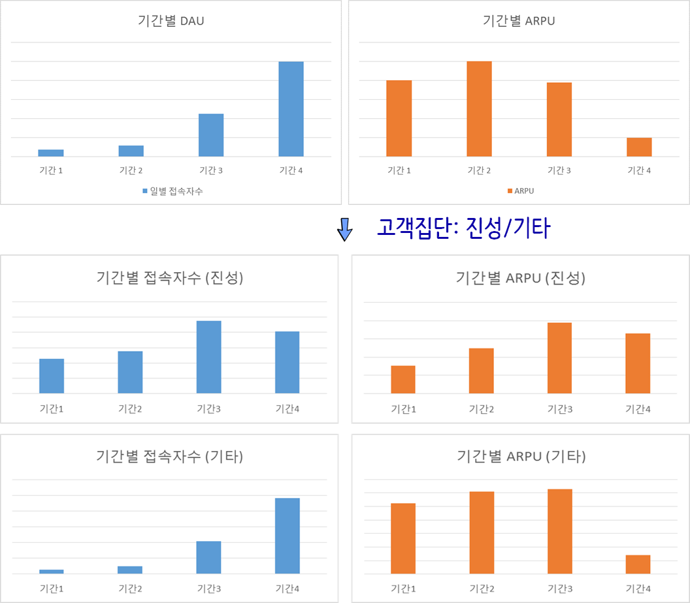

library(tidyverse)
library(cowplot)
library(extrafont)
loadfonts()
simp_df <- tribble(
~book_type, ~num_pages, ~book_price,
"hardcover", 150, 27.43,
"hardcover", 225, 48.76,
"hardcover", 342, 50.25,
"hardcover", 185, 32.01,
"paperback", 475, 10.00,
"paperback", 834, 15.73,
"paperback", 1020, 20.00,
"paperback", 790, 17.89)
simp_df %>%
ggplot(aes(x=num_pages, y=book_price)) +
geom_point(size=3) +
geom_smooth(method = "lm", se=FALSE)8 심슨의 역설
영국의 통계학자 에드워드 심슨이 정리한 역설(Simpson paradox)로, 전반적인 추세가 경향성이 존재하는 것으로 보이지만, 그룹으로 나눠서 개별적으로 보게 되면 경향성이 사라지거나 해석이 반대로 되는 경우를 이른다. [^erick-simpson]: Prof. Eric A. Suess(February 23, 2016), “Simpson’s Paradox - Correlations and Slopes”
[^erick-simpson] 1
중요한 변수(lurking variable)가 빠져서 주로 이런 역설이 발생한다. 심슨의 역설은 확률의 역사에서 중요한 주제 중의 하나로 자리를 잡고 있다.
\(\frac{a_1}{A_1} > \frac{b_1}{B_1}\) 이고 \(\frac{a_2}{A_2} > \frac{b_2}{B_2}\) 이라고 반드시 \(\frac{a_1+a_2}{(A_1+A_2)} > \frac{(b_1+b_2)}{(B_1+B_2)}\) 인 것은 아니다. 즉, “각 부분에 대한 평균이 크다고 해서 전체에 대한 평균까지 크지는 않다”는 의미이다.2
9 심슨의 역설 사례
심슨의 역설 사례를 책페이지수와 책가격의 관계를 살펴보자. 데이터는 책 유형(하드커버, 페이퍼백)은 두가지가 있고, 페이지수와 책가격이 달러로 구성된 데이터프레임이다.
9.1 데이터 시각화
이를 시각적으로 표현하면 관계가 음의 상관관계를 갖는 것을 알 수 있다.
{kind=link}
9.2 기술통계량
num_pages, book_price 두변수를 추출하여 상관계수를 도출한다. 그리고 나서, 책 유형에 따른 상관관계도 도출해 낸다. 먼저 책 유형에 관계없이 num_pages, book_price 상관관계는 -0.5949366으로 나름 강한 음의 상관계수가 관측된다.
이번에는 책 유형에 따른 상관계수는 어떤지 계산해 보자. 이 경우, 하드커버는 0.848, 페이퍼백은 0.956로 강한 양의 상관관계가 존재함이 확인된다.
9.3 상관관계 시각화
앞서 확인한 결과를 책 유형별로 나눠 상관계수를 시각화한다.
simp_df %>%
ggplot(aes(x=num_pages, y=book_price, color=book_type)) +
geom_point(size=3) +
geom_smooth(method = "lm", se=FALSE) +
theme_minimal(base_family = "NanumGothic") +
labs(x="책페이지 수", y="책가격($)", title="심슨의 역설 사례", color="책유형" )+
theme(legend.position = "top"){kind=link}
10 심슨의 역설 기사
심슨의 역설에 대해서 동아사이언스에서 2008년, 2013년 3회 심슨의 역설에 대한 기사를 실었는데 “명문대 남녀 합격생의 반전”, “오류를 잡아라! 확률 법정” 의 기사가 눈에 띈다.
10.1 UC 버클리 입학 3
심슨의 역설관련 가장 유명한 사례는 1973년 UC 버클리 대학 입학데이터로 입학에 성차별이 존재하는지에 관한 데이터다.
성별에 따른 입학률 비교
library(datasets)
admin_df <- UCBAdmissions %>% tbl_df
admin_df %>%
group_by(Gender, Admit) %>%
dplyr::summarise(total = sum(n)) %>%
spread(Admit, total) %>%
mutate(Admitted_Pcnt = Admitted/ (Admitted+Rejected),
Rejected_Pcnt = Rejected/ (Admitted+Rejected)) %>%
DT::datatable(options = list(scrollX = TRUE)) %>%
DT::formatPercentage(c("Admitted_Pcnt","Rejected_Pcnt"), digits=1)복사하여 붙여넣기
admin_df %>%
group_by(Gender, Admit, Dept) %>%
dplyr::summarise(total = sum(n)) %>%
spread(Admit, total) %>%
mutate(Admitted_Pcnt = Admitted/ (Admitted+Rejected),
Rejected_Pcnt = Rejected/ (Admitted+Rejected)) %>%
DT::datatable(options = list(scrollX = TRUE)) %>%
DT::formatPercentage(c("Admitted_Pcnt","Rejected_Pcnt"), digits=1)기술통계량을 통해 살펴본 사항을 그래프로 시각화한다. 막대 그래프를 통해 남성 합격률이 여성보다 높은 것으로 나타나 성차별이 존재하는 것으로 파악되지만, 학과별로 놓고 보면 여성 합격률이 더 높거나 남성과 유사한 것으로 시각적으로 나타난다.
# A barplot for overall admission percentage for each gender.
admit_g <- admin_df %>%
group_by(Gender, Admit) %>%
dplyr::summarise(total = sum(n)) %>%
spread(Admit, total) %>%
mutate(Admitted_Pcnt = Admitted/ (Admitted+Rejected),
Rejected_Pcnt = Rejected/ (Admitted+Rejected)) %>%
ggplot(aes(x = Gender, y = Admitted_Pcnt, width = 0.2, fill=Gender)) +
geom_bar(stat = "identity") +
labs(x="성별", y="입학합격율", title="버클리 전체 입학합격률") +
scale_y_continuous(labels = scales::percent, limits = c(0,1)) +
theme_minimal(base_family = "NanumGothic") +
theme(legend.position = "none")
admit_dept_g <- admin_df %>%
group_by(Gender, Admit, Dept) %>%
dplyr::summarise(total = sum(n)) %>%
spread(Admit, total) %>%
mutate(Admitted_Pcnt = Admitted/ (Admitted+Rejected),
Rejected_Pcnt = Rejected/ (Admitted+Rejected)) %>%
ggplot(aes(x = Gender, y = Admitted_Pcnt, fill=Gender)) +
geom_bar(stat = "identity") +
facet_grid(. ~ Dept) +
labs(x="성별", y="", title="버클리 학과별 입학합격률") +
scale_y_continuous(labels = scales::percent, limits = c(0,1)) +
theme_bw(base_family = "NanumGothic") +
theme(axis.text.x = element_text(angle = 90, hjust = 1),
legend.position = "none")
plot_grid(admit_g, admit_dept_g, labels = ""){kind=link}
11 실제 사례
11.1 게임 업데이터 사례 4
예전에 모 게임에서 큰 규모의 업데이트를 한 후 게임 고객 동향을 분석한 적이 있습니다. 이 게임은 전체 게임 고객을 약 십 여가지 유형으로 분류하고 있는데, 크게 보면 게임 활동이 왕성하고 충성도가 높은 ‘진성’ 유형, 게임 활동이 그리 활발하지 않은 ‘라이트’ 유형, 자동 사냥 유저로 의심되는 ‘봇’ 유형 등이 있죠.
이 게임의 업데이트 전/후 일별접속자수(DAU)와 유저당 결제금액(ARPU) 지표를 확인해 보니 아래와 같이 나왔습니다.

일별 접속자수(DAU)가 크게 늘었지만 유저당 결재금액(ARPU)가 하락하여 뭔가 특단의 조치가 필요한 것으로 파악되지만, 이를 고객 집단을 반영하여 분석을 하게 되면 진성유저는 큰 차이가 없고, 크게 늘어난 유저가 봇이거나 Non-PU 유저라 봇을 비용으로 간주하여 제거하거나 Non-PU유저를 PU로 바꾸거나 PU 유저의 결재금액을 높이는 방향으로 사업적인 조치를 취하는 것이 바람직스러워 보인다.